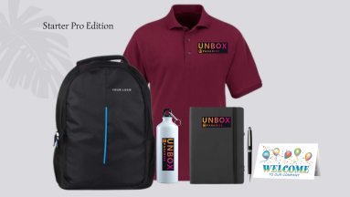

Academic & EdTech Kits: A Complete Guide for Schools, Colleges & Institutes
Published: August 20, 2026

Schools, colleges, coaching institutes and edtech companies all face the same challenge: making every new student feel welcomed and prepared. A well-designed academic kit — also called a student joining kit or admission kit — solves this while reinforcing your institution's brand. This guide covers what to include in academic kits and edtech welcome kits, and how to order them in bulk.
Unbox Paradise designs and supplies academic and institutional kits for institutes in Pune, Bhopal and across India.
Who Needs Academic & EdTech Kits?
- Schools: new admission kits, orientation kits and annual-day recognition hampers.
- Colleges & universities: fresher welcome kits, hostel kits and convocation gifts.
- Coaching & training institutes: student joining kits, study kits and reward hampers.
- EdTech companies: learner welcome kits, course-completion kits and referral gifts.
- Skill & certification programs: onboarding kits for new batches.
What to Include in an Academic Kit
A great academic kit blends study essentials, branded merchandise and a warm welcome. Use this checklist:
- Study essentials: notebook, diary and pens.
- Welcome letter: from the principal, dean or program head.
- Branded apparel: a t-shirt or polo for events and campus wear.
- Bag: a backpack, tote or laptop sleeve.
- Drinkware: a bottle or mug.
- ID & lanyard: a personalized student ID card and lanyard.
- Welcome treat: a small snack or goodie.
Academic Kit Ideas by Segment
Student Joining Kit (Fresher Welcome Kit)
A tote bag, notebook, pen, campus map, ID card and a welcome letter make a complete fresher kit that helps students settle in quickly.
Admission & Orientation Kit
Include the academic calendar, handbook, branded diary and a small gift. This is often a student's first physical touchpoint with your institution.
EdTech Learner Welcome Kit
For online learners, a curated kit delivered home creates a strong brand moment — a notebook, water bottle, stickers and a welcome note work well.
Training Institute Study Kit
A practical kit with a notebook, pen, highlighter, tote and a course checklist supports daily learning.
Recognition & Reward Hampers
For toppers, scholarship recipients and award ceremonies, a premium trophy, medal or gift hamper adds prestige.
How to Order Academic Kits in Bulk
- Confirm the number of students or learners per intake.
- Choose a per-student budget and a kit tier.
- Finalize branding, inserts and personalization (like ID cards).
- Order 2–3 weeks before the admission or joining date.
- Ask about multi-campus delivery if you operate in several cities.
Why Institutes Choose Unbox Paradise
We handle design, branding, assembly, quality checks and delivery so your team can focus on the academic calendar. Explore our academic & institutional gifting services, browse the catalog or request a bulk quote for your next intake.